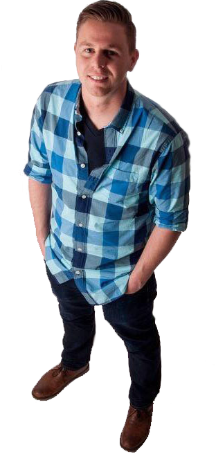

<chris_fasulo>
Hello World!
maker of things.
purveyor of puns.
What's a Chris?

Hi there! First off, I am a graduate from the University of California, Davis with a B.S. in Mechanical Engineering. While at UC Davis, I worked as a Student Assistant at the college's Engineering Fabrication Lab, where I completed various manufacturing projects, supervised and assisted student shop users, and operated the College of Engineering's 3D rapid prototyping printer. Working with this revolutionary new technology allowed me to explore my passion for fusing engineering with creative design.
After graduating, I expanded my knowledge of 3D technologies working part-time for a direct-to-consumer body scanning company while also launching a custom 3D printing company of my own. Since then, I have also worked as a Mechanical Engineering temp designing subsea instrumentation and fixtures for oil extraction and transportation. My most current employment at a manufacturing corporation required the application of engineering principles to design and coordinate unique architectural projects for commercial businesses as well as clients in the private sector.
I am currently taking some time off work to study full-stack web developement and further my computer programming expertise.